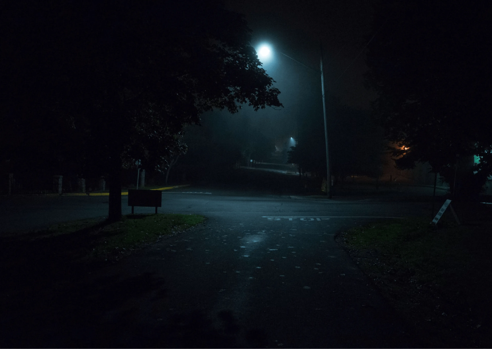
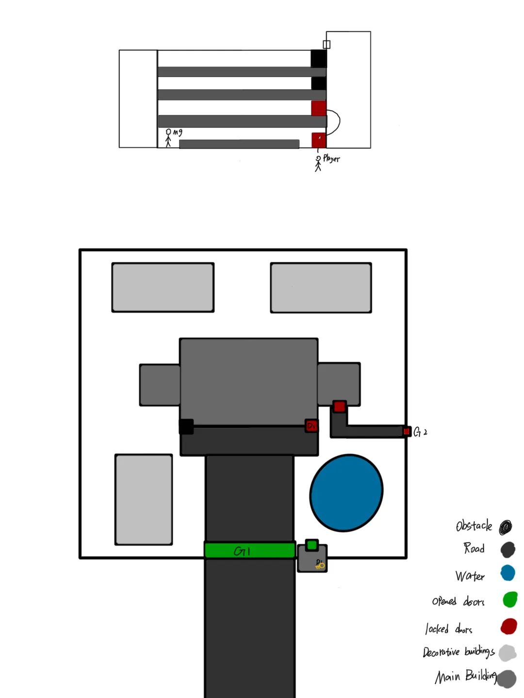
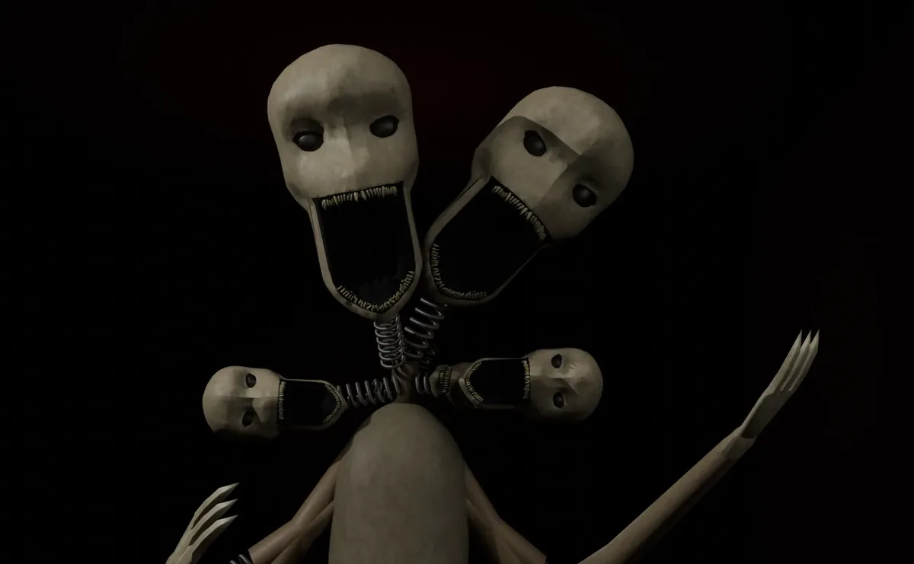

Silent Night at the
Haunted School
A first-person horror RPG built in Unity, about a bullied student locked in his school on the night the dead return, and the three ghosts who won't let anyone leave quietly.
See this project on GitHub Content note. Rated 18+, includes jump scares, and requires a microphone.The
Premise
The game is set inside a school building on the night of the Ghost Festival. The player is Paul, a quiet, bookish student who is bullied by three classmates and forced to spend the night in the building with them under threat. When the curfew breaks, the school's ghosts wake up with it.
Each spirit is trapped in whatever it hated or feared most in life, and the bullies begin dying in ways nobody can explain. To escape, Paul has to solve the building's puzzles while working out whether he was really chosen by chance.
The silent survive. The screaming perish. Will you dare to make a sound
From the game's opening narrationThe player's microphone is live throughout, and screaming has consequences. Several of the school's ghosts are drawn toward sound rather than sight, so staying quiet is a real survival mechanic, not just tone-setting.


The Living
Paul and the three classmates who forced him into the building with them.
Paul
Player CharacterIntroverted and easy to overlook, Paul comes from a family with a quiet, unexamined history of talking to spirits. He'd rather bury himself in a book than be noticed, which is exactly what made him a target.
The Leader
BullyTreats bullying as entertainment and control. Parental neglect is the backstory the team gave him, not as an excuse, but as a reason the cruelty feels earned rather than cartoonish.
The Enforcer
BullyThe most physically aggressive of the three; violence doesn't need a reason for him. A chaotic home life left him numb to other people's pain.
The Follower
BullyA former victim himself, who joined the group to stop being a target. Lacks the others' confidence, but his desperation to belong makes him just as dangerous.
The Dead
A vengeful main ghost and three bound spirits, each trapped in whatever they hated most while alive.

The Main Ghost
Antagonist / GuideA former student, bullied by the same three tormentors, who took her own life after a cruel prank. She wanders the school freely, whispering guidance toward the truth, but attacks if the player screams instead of listening.
The Three Bound Spirits
Ghost in the Painting
Spirit · EnvyGrew up overshadowed by a gifted sibling and turned to bullying to fill the gap. Bound to the school's paintings, she darts between frames, and strikes if the player stops watching them.
Ghost in the Mirror
Spirit · Self-LoathingOnce bullied for a facial disfigurement, he became a bully himself in self-defence. He appears behind the player in reflections, closing in the longer a mirror is stared into.
Ghost in the Hole
Spirit · CrueltyViolent by nature, with no need for a reason to hurt someone. He hides in dark corners and drags at the player from below, and screaming only makes him faster.
Team
& Process
The four of us split into a Design team and a Technical team, with membership shifting as the project moved through its phases. Ewan led as project manager and technical lead throughout, and Yesunkhusel led design and story. Hattie and I started on design and were scheduled to move into the technical team as the workload shifted, me from week 9 and Hattie from week 7.
Everything was built in Maya and Unity and written in C#, with assets on Google Drive and code on GitHub under agreed commit conventions. Weekly beta builds gave us a rollback point if anything broke, and an anonymous feedback form let anyone flag friction in the group without a confrontation.
How the schedule was phased
Weeks 4–6 · Design First
Three of us on character, world and story design while Ewan builds the core technical foundation.
Weeks 6–9 · Transition
Hattie and I move onto the technical team one at a time as design work winds down, keeping the code team never short-staffed.
Weeks 9–13 · Full Build
All four of us on implementation and weekly testing after Easter, finishing with the final build and minutes.
Responsible Design
A horror game about bullying and a live microphone raises real questions before it raises a single jump scare. This is how the group answered them.
Design References
Four horror games and two pieces of folklore the group used to pin down tone, mechanics and setting before any of it went into Unity.
Phasmophobia
Kinetic Games' co-op ghost-hunting title informed how our spirits gather and reveal evidence of themselves, even though our game is single-player and story-driven rather than investigative.
Five Nights at Freddy's
Scott Cawthon's survival horror shaped our thinking on jump scares and resource-management tension, and the idea of a monster the player can't fully understand or defeat.
Doki Doki Literature Club!
Team Salvato's meta-narrative psychological horror is the main reference for how our story hides its horror behind an ordinary setup before turning on the player.
Visage
A haunted-house exploration game that favours atmosphere over jump scares, a reminder that dread can carry a scene without a single scripted shock.
The Hungry Ghost Festival
Ghost Month in the Chinese lunar calendar, when ancestral spirits are said to roam freely, gave the game its calendar hook and its central curfew rule.
Mirror & Painting Folklore
Urban legends about vengeful spirits summoned through mirrors, alongside stories of unsettling haunted paintings, shaped the mechanics behind our own Ghost in the Mirror and Ghost in the Painting.
My
Contribution
My work spanned the project end to end, from building the game's narrative and world, to modelling and designing its visual identity, to implementing it in-engine later on. I wrote the cast's backstories, giving the bullies and the three bound ghosts believable grievances, then carried that world-building into the school's layout, its rules for the Ghost Festival curfew, and the character movement routes that tie the two together.
That world needed a face, so I modelled and art-directed its key figures in Maya, including the Main Ghost's four-headed design, translating the narrative's tone into something the player could actually see and fear. On the research side, I looked at why horror and games pair so naturally, drawing on genre familiarity, sound design's pull on emotion, and how games like Omori fold real struggles like bullying into a horror frame without losing the player's sympathy for the characters. That reading shaped how we wrote the bullies, as people with a backstory rather than just obstacles.
Alongside the creative work, I kept production moving day to day, holding the Monday/Friday meeting rhythm and coordinating the handover as design members rotated onto the technical team. From week 9, my own role shifted the same way, moving from narrative, world and character design into Unity implementation for the rest of the build.